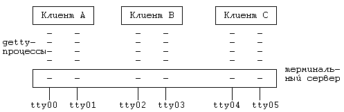

*1. Опишите реализацию системной функции exit в системе с периферийными процессорами. В чем разница между этим случаем и тем, когда процесс завершает свою работу по получении неперехваченного сигнала? Каким образом ядру следует сохранить дамп содержимого памяти?
2. Процессы не могут игнорировать сигналы типа SIGKILL; объясните, что происходит в периферийной системе, когда процесс получает такой сигнал.
*3. Опишите реализацию системной функции exec в системе с периферийными процессорами.
*4. Каким образом центральному процессору следует производить распределение процессов между периферийными процессорами с тем, чтобы сбалансировать общую нагрузку?
*5. Что произойдет в том случае, если у периферийного процессора не окажется достаточно памяти для размещения всех выгруженных на него процессов? Каким образом должны производиться выгрузка и подкачка процессов в сети?
6. Рассмотрим систему, в которой запросы к удаленному файловому серверу посылаются в случае обнаружения в имени файла специального префикса. Пусть процесс вызывает функцию execl("/../sftig/bin/sh","sh",0); Исполняемый модуль находится на удаленной машине, но должен выполняться в локальной системе. Объясните, каким образом удаленный модуль переносится в локальную систему.
7. Если администратору нужно добавить в существующую систему со связью типа Newcastle новые машины, то как об этом лучше всего проинформировать модули Си-библиотеки?
*8. Во время выполнения функции exec ядро затирает адресное пространство процесса, включая и библиотечные таблицы, используемые связью типа Newcastle для слежения за ссылками на удаленные файлы. После выполнения функции процесс должен сохранить возможность обращения к этим файлам по их старым дескрипторам. Опишите реализацию этого момента.
*9. Как показано в разделе 13.2, вызов системной функции exit в системах со связью типа Newcastle приводит к посылке сообщения процессу-спутнику, заставляющего последний завершить свою работу. Это делается на уровне библиотечных подпрограмм. Что происходит, когда локальный процесс получает сигнал, побуждающий его завершить свою работу в режиме ядра?
*10. Каким образом в системе со связью типа Newcastle, где удаленные файлы идентифицируются добавлением к имени специального префикса, пользователь может, указав в качестве компоненты имени файла ".." (родительский каталог), пересечь удаленную точку монтирования?
11. Из главы 7 нам известно о том, что различные сигналы побуждают процесс сбрасывать дамп содержимого памяти в текущий каталог. Что должно произойти в том случае, если текущим является каталог из удаленной файловой системы? Какой ответ вы дадите в том случае, если в системе используется связь типа Newcastle?
*12. Какие последствия для локальных процессов имело бы удаление из системы всех процессов-спутников или серверов?
*13. Подумайте над тем, как в "прозрачной" распределенной системе следует реализовать алгоритм link, параметрами которого могут быть два имени удаленных файлов, а также алгоритм exec, связанный с выполнением нескольких внутренних операций чтения. Рассмотрите две формы связи: вызов удаленной процедуры и вызов удаленной системной функции.
*14. При обращении к устройству процесс-сервер может перейти в состояние приостанова, из которого он будет выведен драйвером устройства. Естественно, если число серверов ограничено, система не сможет больше удовлетворять запросы локальной машины. Придумайте надежную схему, по которой в ожидании завершения ввода-вывода, связанного с устройством, приостанавливались бы не все процессы-серверы. Системная функция не прекратит свое выполнение, пока все серверы будут заняты.

Рисунок 13.13. Конфигурация с терминальным сервером
*15. Когда пользователь регистрируется в системе, дисциплина терминальной линии сохраняет информацию о том, что терминал является операторским, ведущим группу процессов. По этой причине, когда пользователь на клавиатуре терминала нажимает клавишу "break", сигнал прерывания получают все процессы группы. Рассмотрим конфигурацию системы, в которой все терминалы физически подключаются к одной машине, но регистрация пользователей логически реализуется на других машинах (Рисунок 13.13). В каждом отдельном случае система создает для удаленного терминала getty-процесс. Если запросы к удаленной системе обрабатываются с помощью набора процессов-серверов, следует отметить, что при выполнении процедуры открытия сервер останавливается в ожидании подключения. Когда выполнение функции open завершается, сервер возвращается обратно в серверный пул, разрывая свою связь с терминалом. Каким образом осуществляется рассылка сигнала о прерывании, вызываемого нажатием клавиши "break", по адресам процессов, входящих в одну группу?
*16. Разделение памяти - это особенность, присущая локальным машинам. С логической точки зрения, выделение общей области физической памяти (локальной или удаленной) можно осуществить и для процессов, принадлежащих разным машинам. Опишите реализацию этого момента.
*17. Рассмотренные в главе 9 алгоритмы выгрузки процессов и подкачки страниц по обращению предполагают использование локального устройства выгрузки. Какие изменения следует внести в эти алгоритмы для того, чтобы создать возможность поддержки удаленных устройств выгрузки?
*18. Предположим, что на удаленной машине (или в сети) случился фатальный сбой и локальный протокол сетевого уровня зафиксировал этот факт. Разработайте схему восстановления локальной системы, обращающейся к удаленному серверу с запросами. Кроме того, разработайте схему восстановления серверной системы, утратившей связь с клиентами.
*19. Когда процесс обращается к удаленному файлу, не исключена возможность того, что в поисках файла процесс обойдет несколько машин. В качестве примера возьмем имя "/usr/src/uts/3b2/os", где "/usr" - каталог, принадлежащий машине A, "/usr/src" - точка монтирования корня машины B, "/usr/src/uts/3b2" - точка монтирования корня машины C. Проход через несколько машин к месту конечного назначения называется "мультискачком" (multihop). Однако, если между машинами A и C существует непосредственная сетевая связь, пересылка данных через машину B была бы неэффективной. Опишите особенности реализации "мультискачка" в системе со связью Newcastle и в "прозрачной" распределенной системе.
Предыдущая глава || Оглавление || Следующая глава